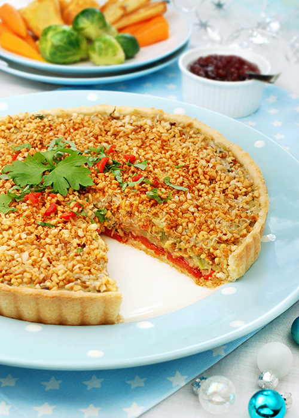

Smoky Leek & Hazlenut Tart
A rich main course, perfect for the season. This tart will freeze well, but thaw thoroughly before reheating. If using a loose-bottomed flan case, always put it on a baking tray, rather than straight into the oven. If you need to transport the tart, leave it in the flan case on the baking tray and cover with foil.

Ingredients
- For the tart:
- 500g Jus-Rol ready-made shortcrust pastry
- 4 leeks (approximately 600g), trimmed and thinly sliced
- 20g butter or 20ml olive oil*
- 3 cloves garlic, crushed
- 4 spring onions, thinly sliced
- 1 onion, finely sliced
- 2 tsp plain white flour
- 300ml milk or soya milk*
- ½ tsp vegetarian or vegan stock powder*
- 1 small pinch clove powder
- 150g vegetarian Wensleydale with cranberry cheese or Vegusto No-Moo Piquant cheeseli alternative (plus 30g of cranberries)*, broken into little pieces
- 1 tbsp harissa paste
- 100g tinned roasted peppers, sliced
- 1 tbsp cranberry sauce
- 100g hazelnuts, gently roasted then chopped
- ¼ tsp smoked paprika
- Salt and pepper, to taste
- For the garnish:
- 1 tsp fresh parsley, roughly chopped
- ¼ red pepper, finely chopped
- ¼ tsp smoked paprika
Method
| Steps | |
|---|---|
| 1. | Pre-heat oven to 180C. |
| 2. | Line a greased 28cm x 2cm deep, loose-bottomed flan dish with greaseproof paper (if you don’t have this size dish it will still work well with a different one, or you could make individual tartlets instead). Roll out the pastry and carefully line the dish, then trim off any excess pastry. Prick the pastry with a fork. |
| 3. | Cover the pastry with parchment paper, then add ceramic baking beans (alternatively use dried pulses or uncooked rice). Place on a baking tray and put in the oven for 25 minutes. Remove the beans and paper, then bake for another 10 minutes. Then take it out of the oven and leave to cool. |
| 4. | While the pastry is cooking, gently sauté the leeks in 10g butter or 10ml oil*. After 5 minutes add the garlic and spring onions and fry for 1 more minute. Season with salt and pepper then set to one side. |
| 5. | To make the cheese sauce: gently fry the onion in 10g butter or 10ml oil* for 10 minutes. Sprinkle on the flour and continue to stir for 2 minutes. Slowly add the milk or soya milk*, a little at a time. The sauce should get thicker as the milk is heated. Add the stock powder and a pinch of clove powder. Cook gently for 5 minutes. |
| 6. | Remove from the heat and add 100g of the cheese (or Vegusto and dried cranberries* if making vegan option). Once the cheese has melted, fold into the cooked leeks. Season as required then set to one side. |
| 7. | Time to assemble the tart! Spread the harissa paste onto the pastry base then add the peppers and cranberry sauce. Top with one-third of the nuts. |
| 8. | Carefully add the leek mixture to the pastry case, then top with the remaining cheese or Vegusto*. At this point the tart can be chilled (or frozen) and reheated as required. |
| 9. | Bake in the oven for a further 10 minutes. |
| 10. | Mix the remaining nuts with a little smoked paprika, then season with salt and pepper. Remove the tart from the oven, scatter the mixture onto the top of the tart and then bake in the oven for another 5 minutes. |
| 11. | To serve: garnish with a little parsley, red pepper and smoked paprika. Allow to cool slightly before cutting.. |
Give US A Visit.